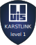
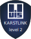
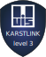

Karstlink Apps
On the occasion of the International Year of Caves and Karst, the UIS and UNESCO agreed that it was urgent to know the karst better in order to be able to protect it.
Information on caves and karst is collected by individuals, by structured or informal groups, and by federal, national or international organizations. All of these people and these structures need computer tools that allow them:
- permanently archive their data
- To share this information with people who need it, especially people and organizations working to protect the karst
- To find the data they need
- To have tools allowing them to carry out all the processing they need with the data they collect
The development of a functional application requires several years of work. It is therefore essential to coordinate efforts to develop applications, which are accessible to all users, for all types of data that are collected in the underground environment. This effort must be launched as soon as possible to envisage providing a response by 2025.
We want to offer a collection of "Karstlink Applications".
We want to provide all people and organizations that collect data on caves and karst with the computer tools to process, share, search and archive this data. To achieve these objectives, we will rely on the technical specifications within the framework of KarstLink.
A l'occasion de l'Année internationale des grottes et du karst, l'UIS et l'UNESCO ont convenu qu'il était urgent de mieux connaître le Karst afin de pouvoir le protéger.
Les informations sur le karst sont collectées par des individus, par des groupes structurés ou informels, par des organisations fédérales, nationales ou internationales. Toutes ces personnes, ces structures ont besoin d'outils informatiques permettant :
- d'archiver durablement leurs données
- de partager ces informations avec les personnes qui en ont besoin, en particulier les personnes et les organisations travaillant pour la protection du Karst
- de trouver les données dont ils ont besoin
- de disposer d'outils leur permettant d'effectuer tous les traitements dont ils ont besoin avec les données qu'ils collectent
Le développement d'une application fonctionnelle nécessite plusieurs années de travail. Il est donc essentiel de coordonner les efforts pour développer des applications, accessibles à tous les utilisateurs, pour tous les types de données collectées dans le milieu souterrain. Cet effort doit être lancé le plus tôt possible pour envisager d'apporter une réponse d'ici 2025.
Nous voulons offrir une collection de "Karstlink Applications".
Nous souhaitons fournir à toutes les personnes et organisations qui collectent des données sur les karsts des outils informatiques pour traiter, partager, archiver ces données. Pour atteindre ces objectifs, nous allons nous appuyer sur les spécifications techniques validées dans le cadre de KarstLink.
Specification of the Karstlink Apps
| Levels | Criteria (en) | Critères (fr) |
|---|---|---|
| Karstlink applications invited | Quality software which does not yet meet all the criteria of level 1 and which wishes to evolve to become a Karstlink Apps. | Logiciel de qualité qui ne respecte pas encore tous les critères du niveau 1 et qui souhaite évoluer pour devenir une Karstlink Apps. |
| Karstlink applications level 1  |
|
|
| Karstlink applications level 2 = Karstlink applications level 1 +  |
|
|
| Karstlink applications level 3 = Karstlink applications level 2 +  | The software allows both humans and machines to query and retrieve other KarstLink data with SPARQL queries | Le logiciel permet à des humains et à des machines d'interroger d'autres logiciels Karstlink avec des requêtes SPARQL |